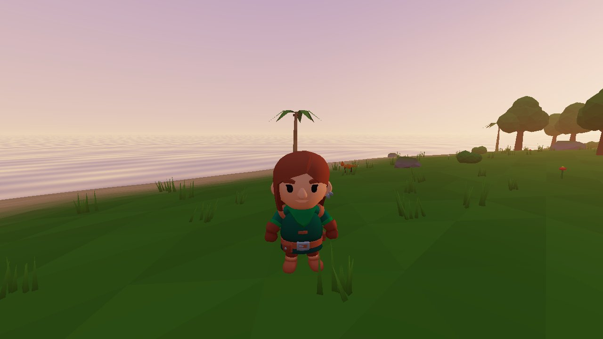
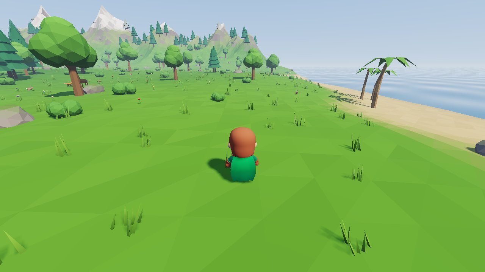
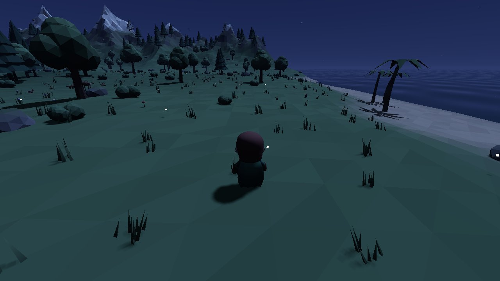

⛰
Eine lebendige Insel
Wiesen, dichte Wälder, verschneite Gipfel, Palmenstrände und ein verzauberter Hain, der nachts leuchtet.
Fantasy · Multiplayer · Low-Poly
Eine Insel voller Wälder, Berge und Geheimnisse. Fälle Bäume, sammle Stein, entdecke die Tiere der Wildnis – allein oder zusammen mit deinen Freunden.
Wiesen, dichte Wälder, verschneite Gipfel, Palmenstrände und ein verzauberter Hain, der nachts leuchtet.
Tritt dem Server bei und erkunde die Welt mit deinen Freunden – flüssig, auch über das Internet.
Sonnenaufgänge, goldene Abende und Sternennächte mit Glühwürmchen, Grillenzirpen und Mondlicht.
Fälle Bäume, schlage Stein und sammle Rohstoffe. Die Welt merkt sich, was ihr verändert habt.



Wird geladen …